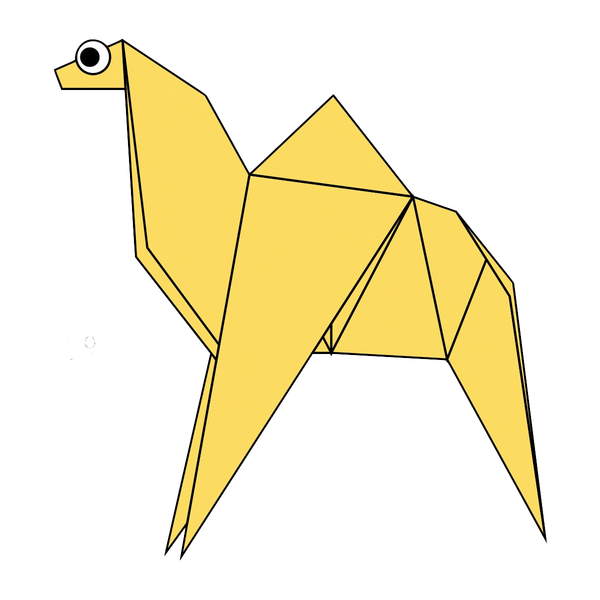

Origami Design
About Us
Follow Us

Interesting Facts About Chameleon
- chameleon are reptiles that are part of the iguana suborder
- changing skin colour is an important part of communication among chameleon
- most chameleon have a prehensile tail that they use to wrap around tree branches

- pigeons are incredibly complex and inteligent animals
- pigeons are renowed for their outstandings navigational abilities
- pigeons have excellent hearing abilities.

- Camel is a domestic animal in desert.
- Its average life is 45-60 years.
- The suitable weather for camel is hot and dry.

- Cicadas have one of the longest insect lifespans
- Cicadas inundate forests as a survival mechanism
- Humans eat them, too

- They have great camouflage for their environment.
- Their eyes are different to normal bears.
- Cubs are well protected in their first month.

- The youth from the world celebrate Teddy Day on 10 February of the year.
- It is probably the most enjoyable day of Valentine's Week.
- It is probably the most enjoyable day of Valentine's Week.